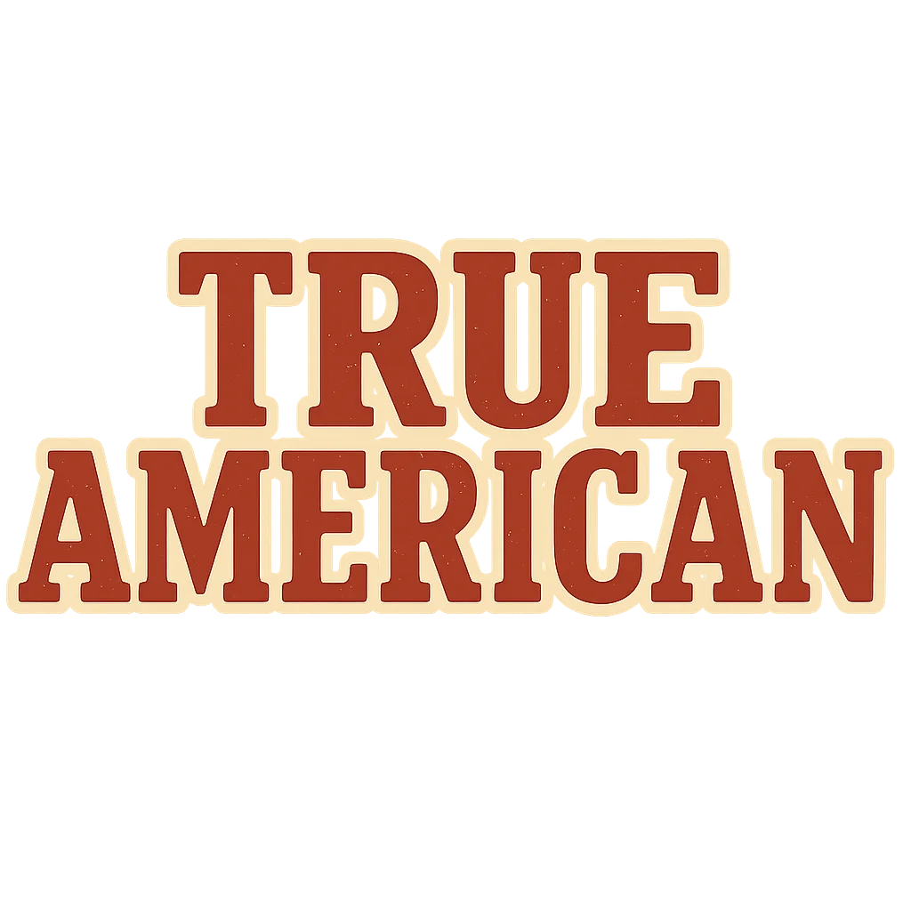

Alla svarar "FDR!", tar en öl från slottet och ställer sig på banan.
Den som har turen går ett steg. Övriga får vinna steg – tryck för en slumpad utmaning eller välj en själv.
Telefonen ropar "JFK!" vid en slumpad tidpunkt. Alla svarar "FDR!" och dricker upp sin öl.
Dryckesleken från tv-serien New Girl. Ett "golvet är lava"-spel med öl, amerikanska presidenter och regler som ingen riktigt kan. Här är en version som faktiskt går att spela.
Bara om alla är med på det.